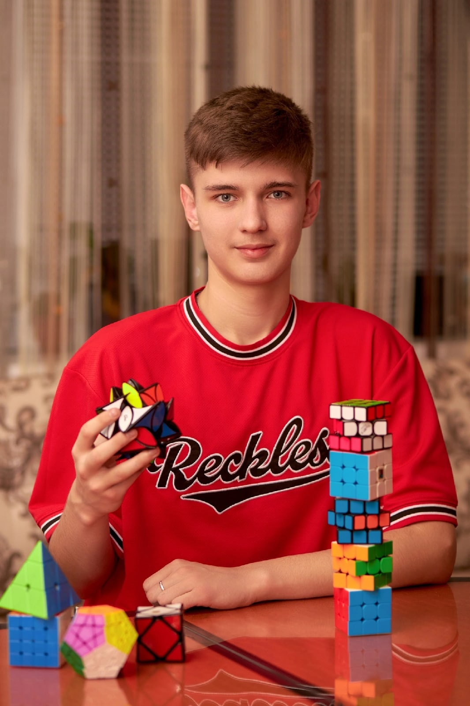

Авторизация
Зарегистрироваться
14 декабря 2022 года
Поздравляем победителей и их руководителей!!! Платонову Марию, обучающуюся 10 "Б" класса с победой в региональном конкурсе научно- исследовательских работ "Математика без границ" (руководитель Манаенко С.Г.). И Селюкова Андрея, обучающегося 9 "В" класса, победителя регионального конкурса образовательных видеофильмов учителей и обучающихся "Все краски, кроме серой" в номинации "Научно-популярный фильм" (руководитель Угримова Л.В.).

6 декабря 2022 года
Поздравляем ребят, прошедших на региональный этап ВсОШ
| Английский язык | Экономика | Экология | География | Обществознание |
|---|---|---|---|---|
| Лукина Алина Михайловна 9В | Кононова Вероника Андреевна 9А | Боев Иван Александрович 9В | Лаврова Полина Валерьевна 9Г | Лукина Алина Михайловна 9В |
| Хряпинская Варвара Витальевна 9В | Платонова Мария Владимировна 10Б | Муратова Дарья Юрьевна 9А | Руцкая Полина Михайловна 10А | Зорина Юлия Сергеевна 10Б |
| Ларина Мария Алексеевна 9В | Чальцева Елизавета Игоревна 10Б | Лавров Виталий Игоревич 10А | ||
| Платонова Мария Владимировна 10Б | Бойченко Дарья Дмитриевна 10А | Спорыхин Даниил Олегович 11А | ||
| Чальцева Елизавета Игоревна 10Б | Перестенко Артём Вадимович 11А | |||
| Лавров Виталий Игоревич 10А | Чернышов Александр Михайлович 11А | |||
| Перестенко Артём Вадимович 11А | Михайлов Максим Сергеевич 11А | |||
| Чернышов Александр Михайлович 11А | Белицких Никита Сергеевич 11А |
21 декабря 2022 года